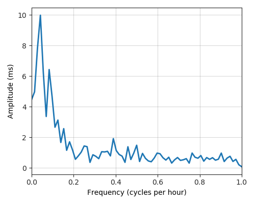
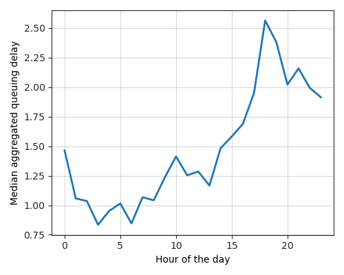
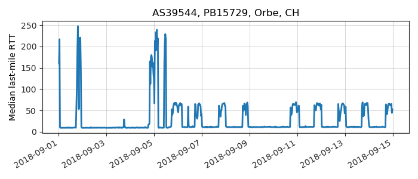
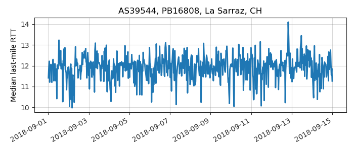
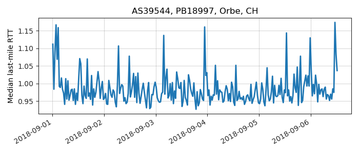
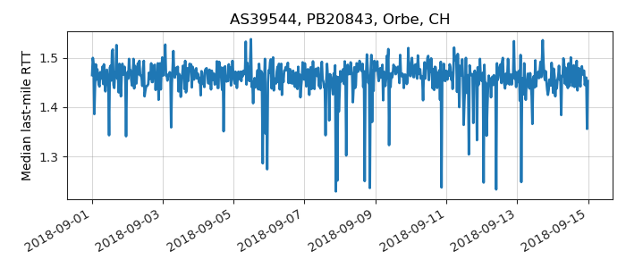
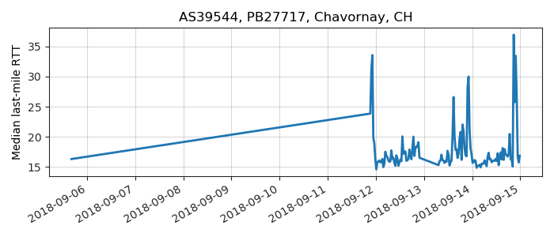

---
layout: default
title: Last-mile delay survey / 2018-09-01 / AS39544
---
AS39544, VOE, CH
Summary
- Daily last-mile fluctuations: severe
- Number of probes: 6
- APNIC eyeball rank: 6136
- Daily fluctuations: True
- Main frequency: 0.0417
- Average peak-to-peak amplitude: 9.97ms
Aggregated last-mile queuing delay

Periodogram

24H profile

Probes' last-mile RTT
- 
- 
- 

- 
- 